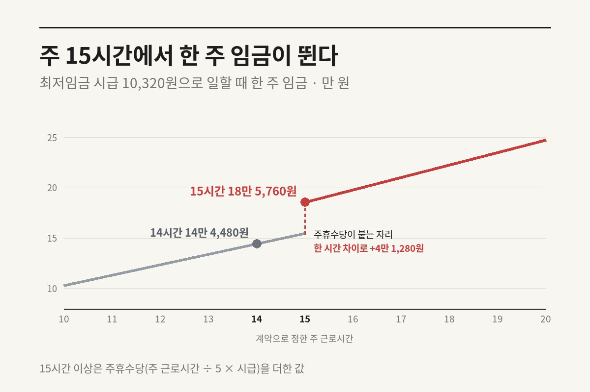

알바 주 14시간과 15시간, 뭐가 다를까
계약으로 정한 근로시간이 주 15시간이 되면 주휴수당이 붙고, 1년 이상 일하면 퇴직금도 생겨요. 한 시간 차이로 한 주 임금이 얼마나 달라지는지, 2027년부터 고용보험 기준이 어떻게 바뀌는지 봐요.
누구에게 적용되나
2026년 10월에 일주일에 15시간 미만으로 일한 취업자는 181만 9천 명이에요. 취업자 100명 가운데 6명꼴이고, 10년 전인 2016년 10월에는 89만 8천 명이었어요. 조사한 주에 실제로 일한 시간으로 센 숫자이고 자영업자도 들어 있어요.
법은 이 15시간에 선을 그어요. 근로기준법은 같은 사업장의 통상 근로자보다 짧게 일하는 사람을 단시간근로자1주 동안의 소정근로시간이 그 사업장에서 같은 종류의 업무에 종사하는 통상 근로자의 1주 동안의 소정근로시간에 비하여 짧은 근로자.근로기준법 제2조 제1항 제9호라고 부르고, 근로조건을 일한 시간에 비례해서 정하라고 해요. 다만 4주를 평균해 소정근로시간근로기준법이 정한 근로시간의 범위에서 근로자와 사용자 사이에 정한 근로시간.근로기준법 제2조 제1항 제8호이 주 15시간 미만이면 주휴일과 연차휴가 조항을 적용하지 않아요. 근로자퇴직급여 보장법도 같은 사람을 퇴직금 대상에서 빼요. 흔히 초단시간 근로자라고 불러요.
여기서 15시간은 실제로 일한 시간이 아니라 소정근로시간, 곧 계약으로 정한 시간이에요. 주마다 시간이 다르면 4주를 평균해요. 일한 지 4주가 안 됐으면 그 기간을 평균해요.
주 15시간 미만이어도 그대로 적용되는 것이 있어요. 최저임금과 산재보험은 근로시간이 짧다고 빠지지 않아요. 근로계약서를 써서 주는 것도 같아요.
이 글은 근로기준법 2026년 10월 8일 시행본, 근로자퇴직급여 보장법과 고용보험법 2026년 9월 18일 시행본, 기간제 및 단시간근로자 보호 등에 관한 법률 2021년 5월 18일 시행본을 기준으로 썼어요.
어떻게 바뀌어 왔나
1997년 3월 13일에 새로 만들어진 근로기준법의 조문에는 15시간이라는 숫자가 없었어요. 소정근로시간이 '현저히 짧은' 단시간근로자에게는 법의 일부를 적용하지 않을 수 있다고만 하고, 누구인지는 대통령령에 맡겼어요. '4주 평균 주 15시간 미만'은 2008년 3월 21일 개정으로 법 조문에 직접 들어왔고, 그해 7월 1일부터 시행됐어요.
2019년 1월 1일부터는 최저임금을 따질 때 주휴수당사용자는 근로자에게 1주에 평균 1회 이상의 유급휴일을 보장하여야 한다. 이 유급휴일에 받는 임금을 흔히 주휴수당이라고 불러요.근로기준법 제55조 제1항17장 주휴수당 →을 받는 시간도 함께 세도록 최저임금법 시행령이 바뀌었어요. 주 40시간 일하는 사람의 한 달 기준 시간이 209시간인 것은 이 때문이에요.
2025년 8월 14일에는 대법원이 주 5일보다 적게 일하는 사람의 주휴수당 계산법을 정리했어요. 하루 8시간씩 이틀 일하면 주휴수당도 8시간 치로 계산하기 쉬운데, 이 판결의 기준으로는 그보다 적어요.
가장 큰 변화는 고용보험이에요. 지금은 한 달 소정근로시간이 60시간 미만이거나 주 15시간 미만이면 고용보험 대상이 아니에요. 3개월 이상 계속 일하는 사람과 일용근로자만 예외예요. 2026년 3월 17일 공포된 개정 고용보험법은 이 기준을 근로시간에서 보수로 바꿨고, 2027년 1월 1일부터 시행돼요. 고용노동부가 2026년 7월 10일 입법예고한 시행령안은 그 기준을 월 보수 80만 원으로 잡았어요. 2027년 최저임금 시급 10,700원으로 주 14시간을 일하면 한 달 임금은 65만 원쯤이라, 한 곳만으로는 이 기준에 못 미쳐요. 다만 3개월 이상 계속 일하면 지금처럼 대상이에요. 개정법은 여러 사업장 보수를 합쳐 기준을 넘으면 본인이 신청해 가입할 수 있게 했고, 입법예고안대로라면 그 기준도 80만 원이에요.
무엇이 문제인가

한 시간 차이로 달라지는 돈이 커요. 2026년 최저임금은 시급 10,320원이에요. 주 14시간으로 계약하면 한 주에 14만 4,480원을 받아요. 주 15시간이면 일한 값 15만 4,800원에 주휴수당 3만 960원이 붙어 18만 5,760원이에요.
사업주 쪽에서 보면 15번째 한 시간의 값은 4만 1,280원, 시급의 4배예요. 여기에 1년 이상 일하면 퇴직금이 생기고, 상시 근로자 5명 이상 사업장이면 연차휴가도 줘야 해요.
그래서 한 사람을 주 28시간 쓰는 대신 두 사람을 14시간씩 쓰는 식으로 계약을 나눌 수 있어요. 흔히 쪼개기 계약이라고 불러요. 일하는 사람은 두 곳에서 합쳐 주 28시간을 일해도, 주휴수당과 퇴직금은 사업장마다 따로 따지기 때문에 어느 쪽에서도 받지 못해요.
전체 숫자만 보면 가려지는 차이도 있어요. 2026년 10월에 주 15시간 미만으로 일한 181만 9천 명을 쪼개 보면 여성이 122만 4천 명으로 67%예요. 앞에서 말했듯 실제로 일한 시간으로 센 통계라, 법이 말하는 초단시간 근로자 수와 같지는 않아요.
생각이 갈리는 지점
15시간 문턱을 그대로 둘 것인가를 두고 두 생각이 맞서요.
한쪽은 문턱이 필요하다고 봐요. 아주 짧게 일하는 근로는 대체로 임시로 잠깐 하는 일이고, 주휴수당과 퇴직금은 한 사업장에 꾸준히 기여한 사람에게 주는 성격이 있다는 거예요. 모든 근로자에게 주게 하면 사용자 부담이 커져 일자리가 오히려 나빠질 수 있다는 걱정도 있어요.
다른 쪽은 문턱을 없애고 일한 시간에 비례해서 주면 된다고 봐요. 시간에 비례하면 사용자 부담도 그만큼만 늘어요. 또 소정근로시간은 사실상 사용자가 정하는 것이라, 이것을 기준으로 삼으면 쪼개기 계약을 막을 수 없다고 말해요.
제도도 갈라졌어요. 고용보험은 2027년부터 시간 문턱을 없애고 보수로 따지지만, 주휴일과 연차휴가, 퇴직금의 15시간 문턱은 그대로예요.
법원은 어떻게 봤나
두 생각은 헌법재판소에서 맞붙었어요. 2021년 11월 25일 헌법재판소는 초단시간 근로자를 퇴직금 대상에서 뺀 조항이 헌법에 어긋나지 않는다고 결정했어요. 초단시간 근로는 일반적으로 임시적인 근로여서, 사업장에 대한 기여를 전제로 하는 퇴직급여 제도와 맞지 않는다는 이유였어요. 재판관 3명은 퇴직금이 나중에 받는 임금인 만큼 시간에 비례해 주면 된다며 반대의견을 냈어요.
15시간을 무엇으로 세는지는 대법원이 2024년 7월 11일 판결에서 다뤘어요. 국립대학교에서 주당 강의시간이 12시간 이하인 시간강사들이 주휴수당과 연차휴가수당을 달라고 낸 소송이었어요. 2심은 계약서에 적힌 주당 강의시간을 소정근로시간으로 봤고, 강의 준비 시간을 넣어도 주 15시간이 안 된다고 했어요. 대법원은 이를 뒤집고 사건을 돌려보냈어요. 강의 준비, 학생 상담, 시험 출제와 채점처럼 강의에 따라오는 업무 시간까지 합쳐서 봐야 한다는 거예요. 대법원은 강의시간의 3배를 하나의 기준으로 삼을 수 있다고 했어요.
주휴수당을 몇 시간 치로 줄지는 2025년 8월 14일 판결이 정리했어요. 격일로 일하는 택시 기사의 사건이었어요. 대법원은 따로 정한 것이 없으면 주 5일보다 적게 일하는 사람은 근로일을 5일로 보고, 주 소정근로시간을 5로 나눈 시간만큼 주휴수당을 주는 것이 맞다고 했어요. 하루 근로시간을 그대로 주면, 주 이틀 일하는 사람이 주 닷새 일하는 사람과 같은 주휴수당을 받게 된다는 이유예요. 판례는 바뀔 수 있어요.
정리하면
먼저 근로계약서에 적힌 소정근로시간을 확인해요. 4주 평균이 주 15시간 이상이고 그 주에 일하기로 한 날을 모두 나왔다면 주휴수당 대상이에요. 주휴수당은 상시 근로자 4명 이하인 사업장에서도 받아요. 연차휴가는 5명 이상 사업장에서만 생겨요.
주 15시간 이상으로 1년 이상 일했다면 퇴직금도 대상이에요. 사업장 규모와 상관없어요.
계약서의 시간과 실제가 다르면 계약서만으로 끝나지 않아요. 2024년 판결처럼 법원은 그 일을 하는 데 통상 필요한 시간을 따져요. 근무표와 출퇴근 기록, 업무 지시 메시지가 자료가 돼요.
사회보험은 기준이 따로 있어요. 국민연금과 건강보험의 직장 가입은 원칙적으로 한 달 소정근로시간 60시간이 기준이에요. 고용보험은 2026년까지는 같은 시간 기준을 쓰고, 2027년부터는 보수로 따져요. 기준에 못 미쳐도 3개월 이상 계속 일하는 사람과 일용근로자는 지금도, 2027년 뒤에도 대상이에요.
받지 못한 주휴수당은 임금이어서 3년 동안 청구할 수 있어요. 지방고용노동관서에 임금체불 진정을 내거나 소송으로 청구해요.
직접 계산해 보기
주휴수당은 '주 소정근로시간 ÷ 5 × 시급'이에요. 주 5일 이하로, 주 15시간 이상 40시간 이하를 일하는 사람에게 맞는 식이고, 주 40시간이면 8시간 치가 돼요.
시급 10,320원으로 하루 5시간씩 주 5일, 주 25시간을 일한다고 치면 주휴수당은 5시간 치인 5만 1,600원이에요. 일한 값 25만 8,000원과 합쳐 한 주에 30만 9,600원을 받아요.
하루 8시간씩 이틀, 주 16시간을 일한다고 치면 주휴수당은 16 ÷ 5 = 3.2시간 치인 3만 3,024원이에요.
2027년 최저임금은 시급 10,700원이에요. 주 15시간이라면 주휴수당은 3만 2,100원이 돼요. 아래 도구에 주 소정근로시간과 시급을 넣어 보세요.
내 주휴수당 계산해 보기
한 주 주휴수당원
주 5일 이하로 일하고 주 소정근로시간이 15시간 이상 40시간 이하이며, 그 주에 일하기로 한 날을 모두 나온 근로자 기준이에요. 15시간 미만이면 주휴수당이 없어요. 참고용 계산이고, 정확한 금액은 고용노동부 고객상담센터(1350)에 물어보세요.
사장님이라면
근로계약서에 임금과 소정근로시간을 적어서 줘야 해요. 주지 않으면 500만 원 이하의 벌금이에요. 상시 5명 이상 사업장에서 단시간근로자를 쓸 때는 일하는 요일과 요일별 근로시간까지 서면으로 밝혀야 하고, 빠뜨리면 500만 원 이하의 과태료 대상이에요.
주 15시간 이상인 근로자에게 주휴일을 유급으로 주지 않으면 2년 이하의 징역 또는 2,000만 원 이하의 벌금에 처할 수 있어요.
상시 5명 이상 사업장에서는 단시간근로자에게 정해 둔 시간보다 더 일을 시키려면 동의를 받아야 하고, 한 주에 12시간을 넘길 수 없어요. 넘겨 일한 시간에는 통상임금의 50% 이상을 더 줘야 해요. 동의 없이 시키면 1,000만 원 이하의 벌금이에요.
2027년 1월 1일부터는 고용보험이 보수 기준으로 바뀌어요. 입법예고안대로라면 해마다 한 번 하던 보수총액 신고가 없어지고, 보수를 준 달의 다음 달 말일까지 월 보수를 신고해요.
다음 장3장 기간제 근로자 →
자료
- 국가법령정보센터, 근로기준법 (2026. 10. 8. 시행) (새 창)
- 국가법령정보센터, 근로기준법 시행령 (2025. 10. 23. 시행) (새 창)
- 국가법령정보센터, 근로자퇴직급여 보장법 (2026. 9. 18. 시행) (새 창)
- 국가법령정보센터, 고용보험법 (2026. 9. 18. 시행, 법률 제21473호 부칙) (새 창)
- 국가법령정보센터, 고용보험법 시행령 (2026. 9. 18. 시행) (새 창)
- 국가법령정보센터, 기간제 및 단시간근로자 보호 등에 관한 법률 (2021. 5. 18. 시행) (새 창)
- 국가법령정보센터, 최저임금법 시행령 (2019. 1. 1. 시행) (새 창)
- 국가법령정보센터, 최저임금법 (2020. 5. 26. 시행) (새 창)
- 국가법령정보센터, 산업재해보상보험법 (2026. 7. 1. 시행) (새 창)
- 국가법령정보센터, 근로기준법 (1997. 3. 13. 제정, 법률 제5309호) (새 창)
- 국가법령정보센터, 국민연금법 시행령 (2026. 1. 1. 시행) (새 창)
- 국가법령정보센터, 국민건강보험법 시행령 (2026. 10. 1. 시행) (새 창)
- 대법원 2024. 7. 11. 선고 2023다217312 판결 (새 창)
- 대법원 2025. 8. 14. 선고 2022다291153 판결 (새 창)
- 헌법재판소 2021. 11. 25. 선고 2015헌바334 결정 (새 창)
- 국가데이터처 국가통계포털, 경제활동인구조사 취업시간별 취업자 (새 창)
- 국가데이터처 국가통계포털, 경제활동인구조사 성/취업시간별 취업자 (새 창)
- 고용노동부 보도자료, 모든 일하는 사람을 위한 고용보험의 첫걸음, 소득기반 고용보험으로 시작한다 (2026.7.10) (새 창)
- 고용노동부 고시 제2025-47호, 2026년 적용 최저임금 고시 (새 창)
- 고용노동부 고시 제2026-60호, 2027년 적용 최저임금 고시 (새 창)